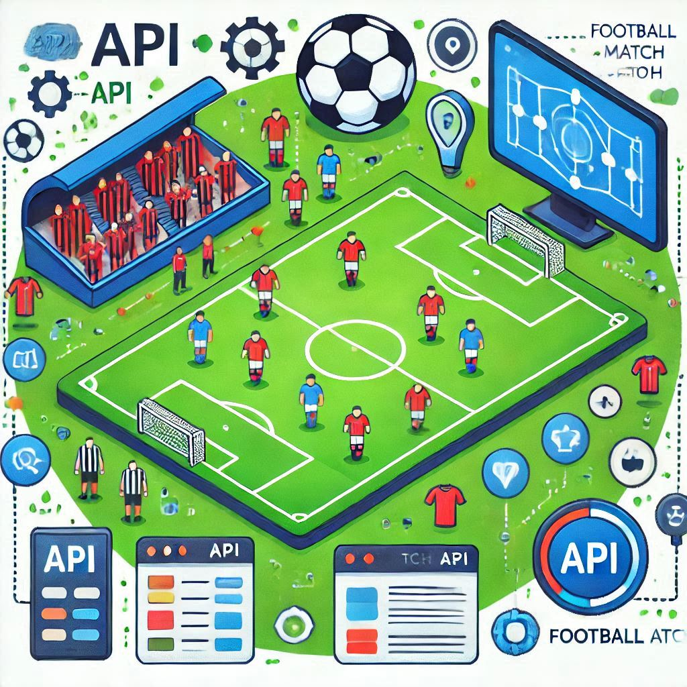

Meus
Projetos
Automação de Processos
Este projeto desenvolve um bot em Python para automatizar tarefas como mineração de dados e integração com sistemas. Ele organiza informações, executa consultas e interage com APIs de forma eficiente, otimizando processos.
Ver mais

API de Partidas de Futebol
Desenvolvimento de uma API que gerencia dados sobre partidas de futebol, como equipes, horários e resultados. A API permite cadastro, consulta e atualização de informações com foco na eficiência e acessibilidade.
Ver maisPessoas Endereços
Sistema CRUD para criar, ler, atualizar e excluir dados de pessoas e endereços. A aplicação facilita a gestão de informações em banco de dados, integrando funcionalidades com segurança e praticidade.
Ver mais